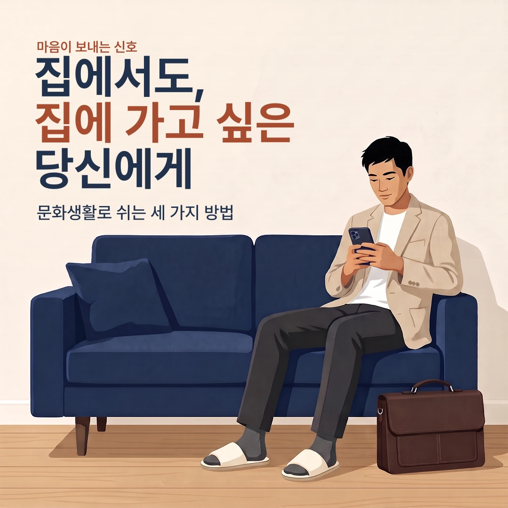
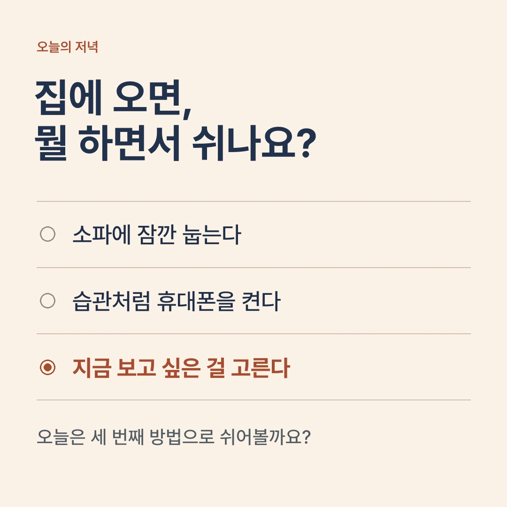
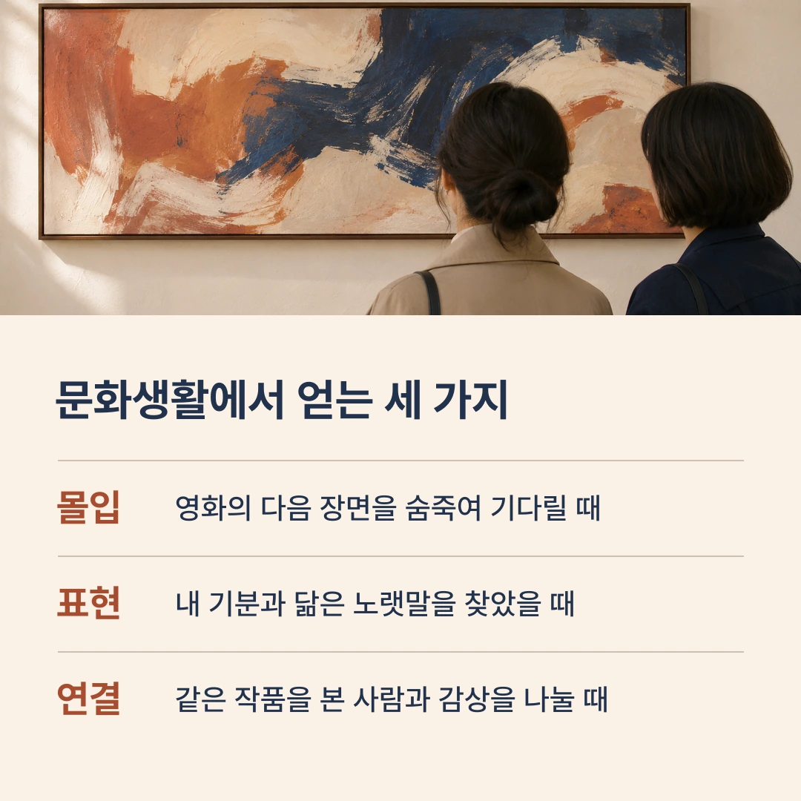
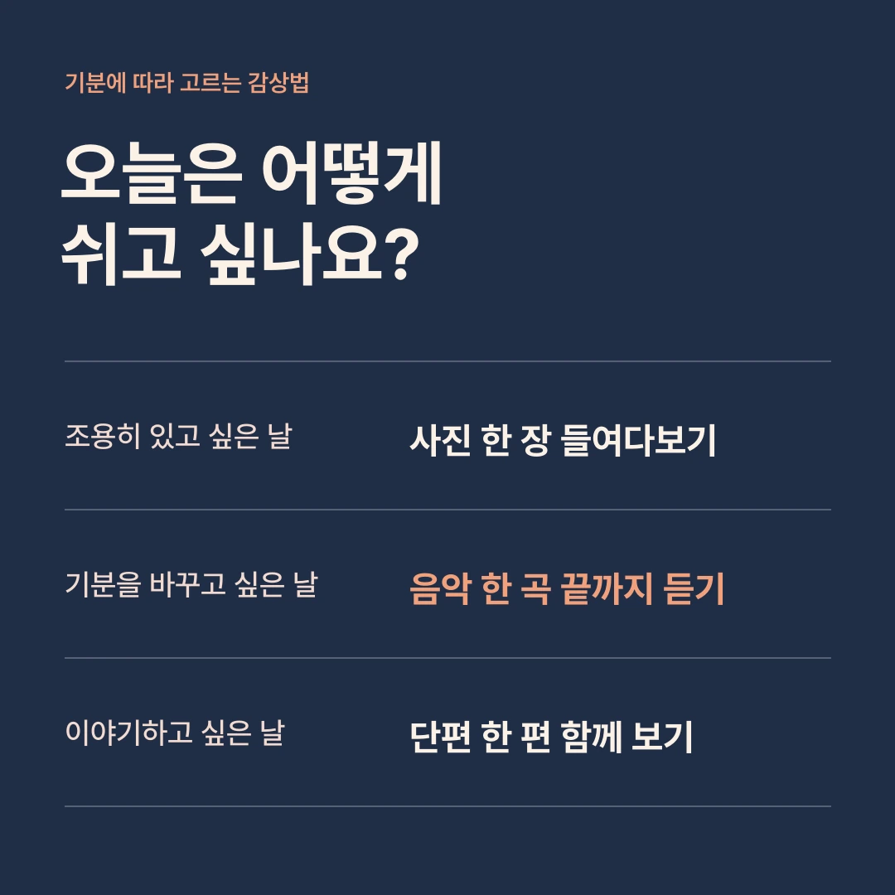
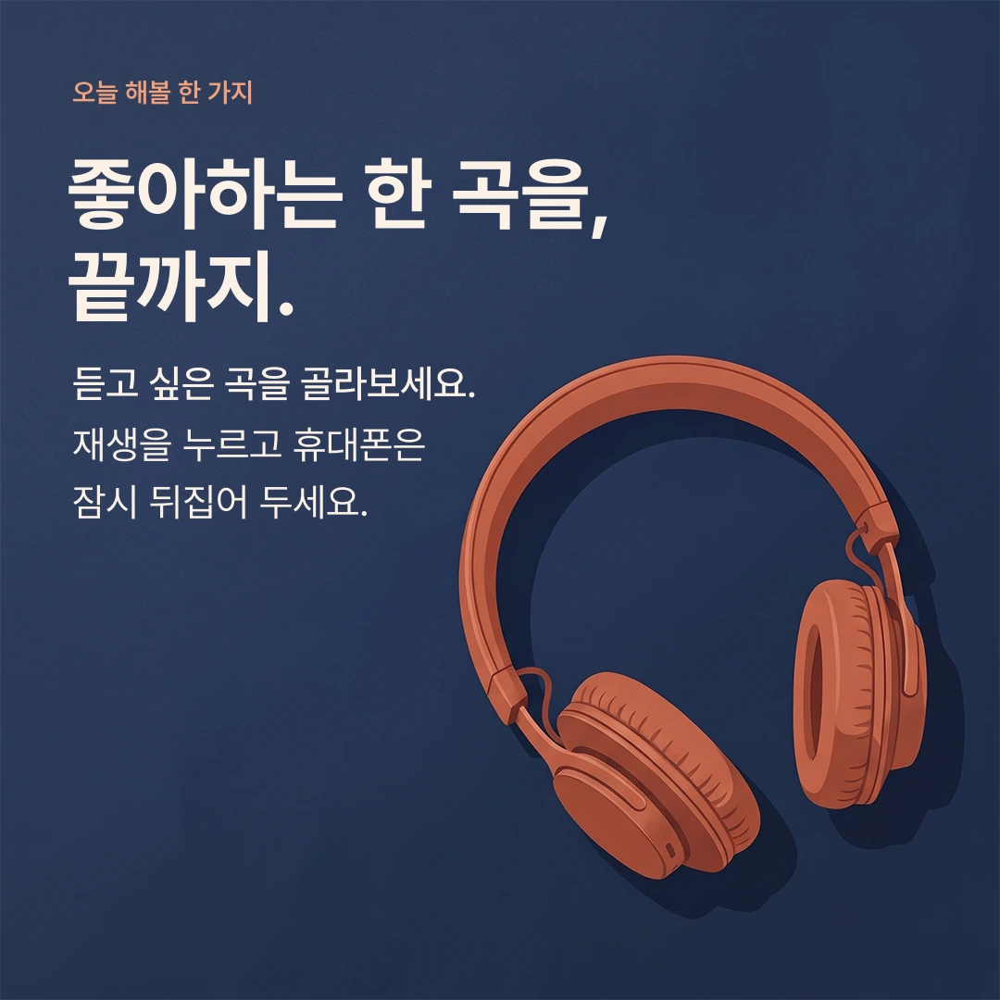
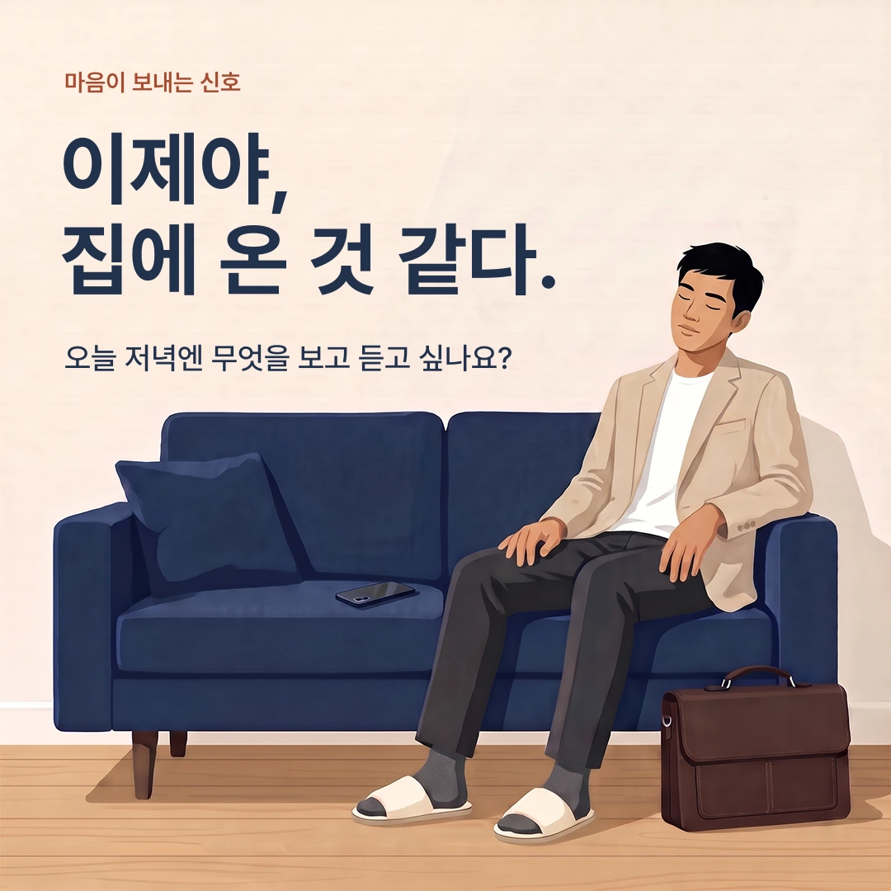

문화생활 카드뉴스
Adobe Photoshop · 문화생활로 쉬는 세 가지 방법 · 6장
집에서도, 집에 가고 싶은 당신에게
집에 돌아와서도 제대로 쉬지 못하는 사람들을 위한 카드뉴스를 만들었습니다. 문화생활을 통해 얻을 수 있는 몰입과 표현, 연결의 경험을 소개하고 그날의 기분에 맞는 감상 방법을 추천했습니다. 첫 장과 마지막 장에는 같은 인물과 소파를 배치해 여섯 장이 하나의 이야기처럼 이어지도록 했습니다.











